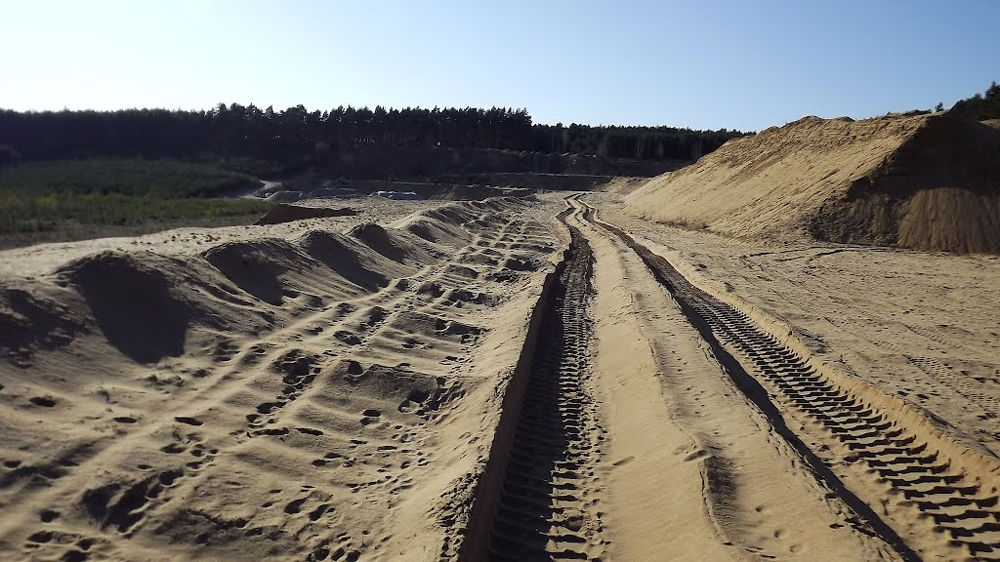
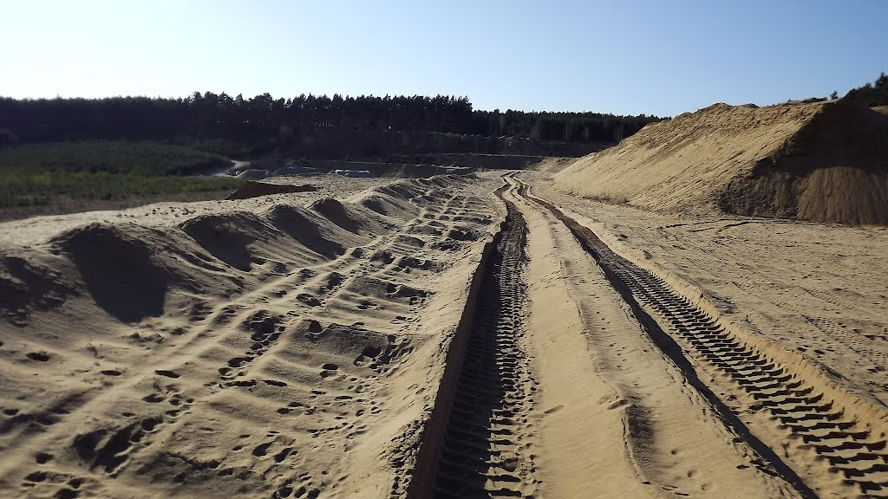

Váté písky jsou jedinečným biotopem, který se rozkládá mezi železničními stanicemi Rohatec a Bzenec-Přívoz. Často se mu přezdívá moravská Sahara. Nachází se pouze podél železniční trati v délce 5,5 km a jeho nejširší část měří kolem 60 m.
Národní přírodní rezervace Váté písky je v České republice zcela jedinečnou ukázkou společenstva na otevřených píscích se specifickou skladbou rostlinných a živočišných druhů. Borové lesy, vysázené do původních dubových porostů koncem 19. století, spoutaly zdejší pohyblivé písečné přesypy, které ohrožovaly i okolní pole.
Nejvýznamnější lokality pískomilného rostlinstva a živočišstva z celé republiky leží právě tady. Žije zde i řada ptačích druhů (např. lelek lesní, dudek chocholatý nebo skřivan lesní). V řídké vegetaci roste bohatství suchomilných mechorostů a lišejníků. Byla zde zjištěna také řada vzácných druhů střevlíkovitých brouků, bohatá je fauna blanokřídlých, zejména kutilek, žahalek a včel. Je možné zde zahlédnout kudlanku nábožnou a několik desítek druhů pavouků.
Vznik tohoto úkazu je vysvětlován různě. Podle některých sem koncem doby ledové větry odkudsi navály deseti až dvacetimetrovou vrstvu písku. Ve skutečnosti ale písky pocházejí ze sedimentů řeky Moravy, které byly z Moravy později vyváty a místy dosahují mocnosti až 30 metrů. V části NPP naleznete i perfektní in-line trasu.
 
